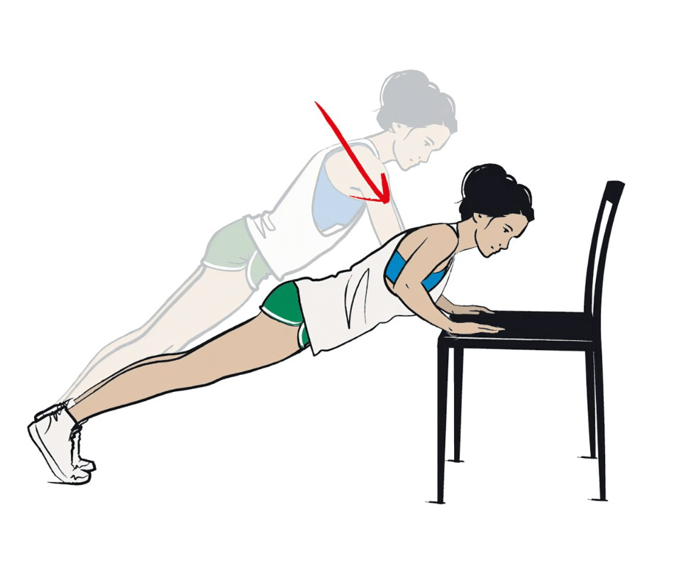
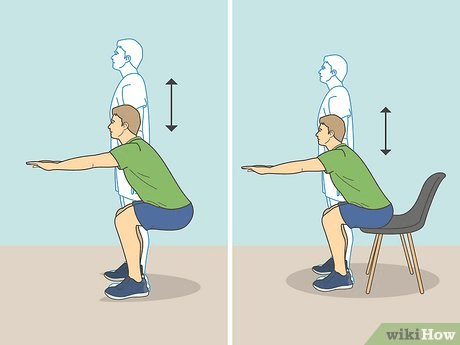
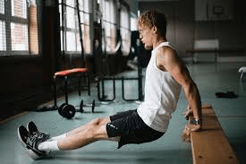
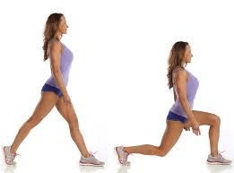
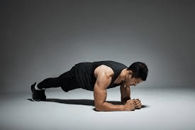
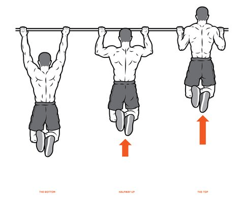

-
Pushup
Well it shouldn't come as a surprise pushup is one of the most Essential exercise you can do for your upper body and you can not only target your chest but you can change the variation of the exercise and target different parts of upper body like
- Diamond pushup For TRICEPS
- Pike pushup for shoulders
- Pushup for upper , middle and lower chest
NOW IF you can't do single pushup start with pushup on elevated surface and then keep on lowering the elevated surface until you reach on the flat surface and can do one full pushup .

HERE is a video where you can see 5 different types of pushup to progress after you master basic pushup.
Pushup_variation -
Squats
If Pushup is for upper body then Squats are for your lower body . It is very crucial for your whole body and The way to start it is to think that you are sitting on a chair and move with your hips and
Remeber your posture should be correct YOUR back should be straight and your knees should not exceed your toes
 -
Dips
It iS one of the most crucial exercise for your arms and it acts for gateway for you in calisthenics . in order to start doing it you can first start on a bench or on any surface where you can placae your hand firmly .
AND then you shoul progress to two horizontal bars
 -
Chinups
Have u ever wondered why the people who does gymnastics have such big arms , It's because of they include chinups in the programs it not only hits your lats but also very beneficial for your biceps.

-
Lunges
This is one of the another lower body exercise but the difference between this and the other lower body exercise is that it can target various body parts of lower body like glutes , hamstring and quads.
 -
Plank
This is one of the most important exercise to make your core stability and holding will help in pushup and other calisthenics exercises.
 -
Pullup
Whether we are talking about Home workout or weight training . There is one workout which will be common in both of them and that is Pullup . This is like the pioneer of every calisthenics exercises or weight training . This hit your back and specifically your lats like nothing else . and ofcourse the hardest of them all that's why i am including one bonus workout's for you to do .
 -
Bar hanging
This is one of the most neglected all of them .
The benefit of doing these are enormous
- improve grip strength
- helps in improving shoulder mobility
- helps to increase your pullups and chinups and also tightens your core!!!!
Comments
Name
Comment
Name
Comment
Name
Comment